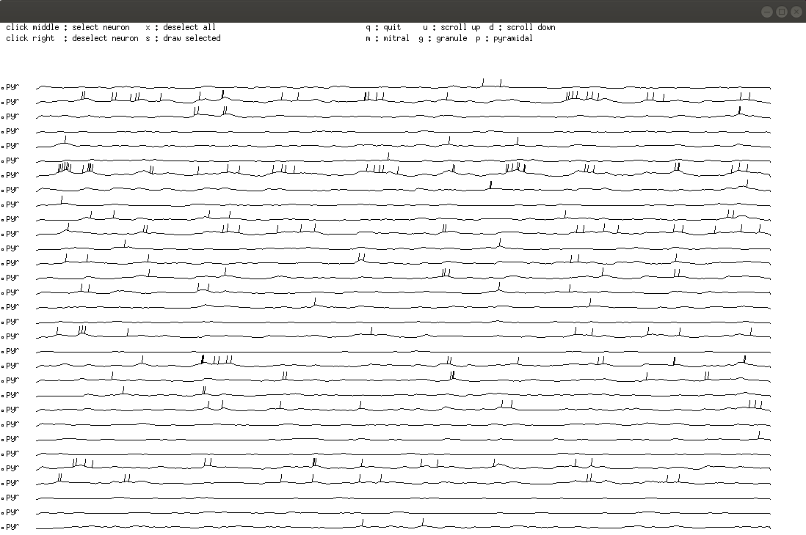
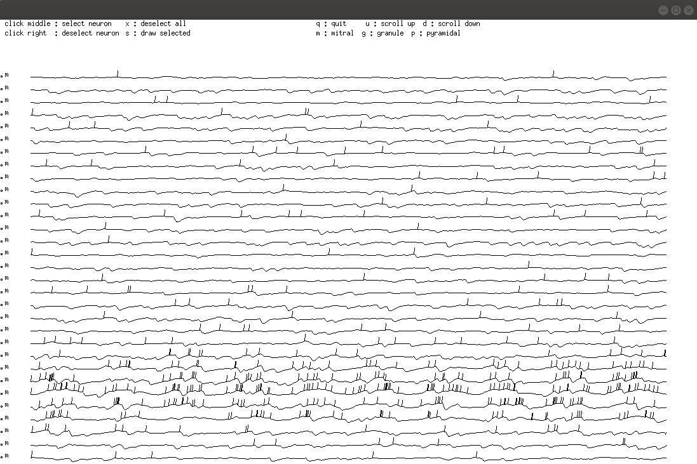

This is the readme for the model associated with the paper:
Linster C, Kelsch W (2019) A computational model of oxytocin modulation of olfactory recognition memory. eNeuro
http://dx.doi.org/10.1523/ENEURO.0201-19.2019
This C code was contributed by C Linster.
Example Use:
----------------
Build and run the executable: (X-library folders may have to be adjusted:
on ubuntu 18.04 the command "sudo apt install libxt-dev" had to be executed to supply the X-library folders):
make -f neuron.mak
./neuron.run
Linster and Kelsch Figure 2C and 3C
Figure shows AON pyramidal cell simulations under two conditions
(control and OXT modulation). OXT modulation decreases pyramidal cell
spike rate adaptation and spiking threshold. For control simulations,
use (in File bulb.dat; see below)
PYR:
input_function ADAPT_INPUT
in_par1 100.0
in_par2 0.2
state_function DECAY
sta_par 10
output_function SPIKE
out_par1 0.5
out_par2 8.0
Use ./neuron.run to run model. Choose 1. Set up new, 31. Odor stim,
0 don’t learn 0 don’t forget. Once you see the display panel, use
“p” in the graphics window to display only pyramidal cells. This
displays activities similar to those depicted in Figure 2Ci.

Type
“x” into graphics window to unselect pyramidal cells, then “m” to
display mitral cells as shown in Figure 3C.

Type “q” in display panel to get handle back for menu items.
Change parameters for pyramidal cells in bulb.dat
PYR:
input_function ADAPT_INPUT
in_par1 100.0
in_par2 0.0
state_function DECAY
sta_par 10
output_function SPIKE
out_par1 0.5
out_par2 4.0
Save the file, type 4 (set up new) to create a new network, then 31
(odor stim) or 21 (same input) to run simulation. When graphics
display, type “p” into graphics window to display pyramidal cells
only. To see mitral cells , use “x” to unselect neurons and then “m”
in the graphics window.
Figure 3 D and E, 4C and 5
The file save.c has routines to run simulations with a number of
odors and to save the neural activities to perform statistics and
comparisons. SAVE2 for example compares responses to familiar and
novel odors, saves activity vectors and weight matrices and then
habituates to a familiar odor, and/or learns this familiar odor in
cortex, and save synaptic weights in certain intervals. After
learning familiar and novel odors are presented again and activities
saved. Then “forgetting” happens, a function in which synaptic
weights slowly decay back to their original values.
SAVE is set up to compute discrimination and detection indices by
comparing activities of different odor stimuli to each
other. SAVE_CONC computes responses to a given odor at a range of
concentrations for S/N computations.
BULB
MOLS 100
RECS 100
GLOMS 100
neurs 1
RECEPTORS:
input_function GET_MOLECULES
in_par1 0.0
in_par2 0.0
state_function LINEAR
sta_par 0.0
output_function SPIKE
out_par1 -0.01
out_par2 1.0
PG:
input_function SUM_INPUTS
in_par1 0.0
in_par2 0.0
state_function DECAY
sta_par 2
output_function SPIKE
out_par1 0.2
out_par2 4.0
ET
input_function SUM_INPUTS
in_par1 -0.0
in_par2 0.0
state_function DECAY
sta_par 8
output_function SPIKE
out_par1 1.0
out_par2 4.0
MITRAL
input_function SUM_INPUTS
in_par1 -0.0
in_par2 0.0
state_function DECAY
sta_par 8
output_function SPIKE
out_par1 -0.1
out_par2 8.0
GRANULE:
input_function SUM_INPUTS
in_par1 -0.0
in_par2 0.0
state_function DECAY
sta_par 4
output_function SPIKE
out_par1 2.0
out_par2 4.0
PYR:
input_function ADAPT_INPUT
in_par1 100.0
in_par2 0.2
state_function DECAY
sta_par 10
output_function SPIKE
out_par1 0.5
out_par2 8.0
AFFERENTS(w/d/N/A):
R_M 0.4 1 0.0 1.0
R_PG 0.0 1 1 0.0 1.0
R_ET 0.02 1 0.0 1.0
LOCAL(w/d/N/A/A/B):
M_PG 0.0 1 0.0 1.0
PG_M 0.01 1 1.0 0.0
ET_PG 0.0 1 0.0 1.0
ET_M 0.1 1 0.0 1.0
PG_ET 0.0 1 1.0 0.0
BULB(w/d/prob/N/A):
M_G 0.25 1 0.2 0.0 1.0
G_M 0.25 1 0.0 0.98 0.02
G_G 0.05 1 1.0 1.0 0.0
CENTRAL(w/d/prob/N/A):|
M_P 0.3 1 0.2 0.0 1.0
P_M 0.0 1 0.1 0.0 1.0
P_G 0.2 1 0.2 0.0 1.0
P_E 0.1 1 0.2 0.0 1.0
P_P 0.0 1 0.25 0.0 1.0
max1 1.0
max2 1.0
RATEASS 0.000
RATEMCGC 0.001
RATEPCGC 0.01
FORGETASS 0
FORGETMCGC 10
FORGETPCGC 4500
OXT 1.0
Program files (.c) :
sim.c functions to create neurons and synapses between neurons
set.c function to create a network of olfactory bulb sensory neurons, PG, ET, mitral and granule cells connected to a layer or cortical pyramidal cells
functions.c: a collection of functions that allow to update neurons' inputs, voltage and output at every step
update.c: functions to iterate a network over a number of sampling steps
util.c: collection of useful functions
io.c: some input and output functions, for example functions to create odor stimulation or read outputs
neuron.c: contains the main function that runs the program and displays results and lets user work with the simulations
gra.c, color.c: a collection of graphical functions
show.c , draw.c: functions to display results
fft.c: functions to calculate FFT of signals and crosscorrelations
Definition files (.init):
cell.init, draw.init, gra.init, lib.init, my.init contain definitions of global variables and functions
Parameter files (.dat):
bulb.dat: allows to choose parameters to build a network
channels.dat: parameters for synaptic interactions
draw.dat: display parameters
para.dat: simulation parameters such as number of sampling steps
Make files (.mak):
neuron.mak
Create executable called neuron.run
save.mak graph.mak
20191009 readme edits from C Linster on how to run the model to create figures in the paper